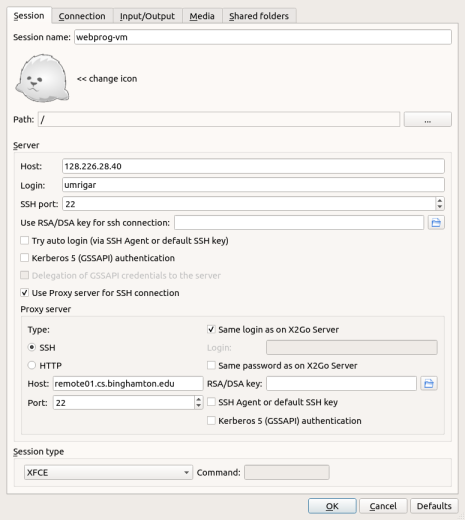

Course VM Setup
Each student is being given a virtual machine which is dedicated to this course. You may use it for any activities relevant to this course or your CS interests.
The VM can only be accessed using ssh from within the campus network. In fact, because of university firewall restrictions it may not even be accessible when logged on to the university's wifi network. To avoid access restrictions, it is advisable to always access your VM via the remote.cs cluster, or a machine in one of the CS labs.
The VM runs Ubuntu 18.04. Software which will be required by the course is pre-installed, but it is possible that you may need to install additional software during the course of the semester.
You should make sure that you perform each of the following steps:
Optionally, set up GUI access to your VM using vnc.
Once you have set up your VM, you should set up git.
[This document uses the term "workstation" to refer to the computer to which your keyboard and mouse are attached to.]
Initial Password Change
You should have received an email giving you the IP address VM-IP of your VM, your login id VM-ID and your initial password VM-PW. Since your password has been exposed in an unsecure email, it must be changed ASAP. Hence you should immediately login to your VM and change your password to some VM-NEW-PW of your choosing.
Log in to remote.cs from your workstation using ssh. If your workstation runs Linux or OS/X, you can do so using a command-line ssh client. If your workstation runs Windows, you can use a ssh client like putty.
[Irrespective of the course you are registered for, you will notice that your VM has a name starting with CS444; it was set up this way for convenience by the sysadmin and should not make any difference to you.]
Once logged in to remote.cs, log in to your VM.
Use the passwd command on your VM, to change your password.
Once you have logged in to remote.cs as in (1) above, the following log shows how you would perform steps (2) and (3):
remote02:~$ ssh VM-ID@VM-IP The authenticity of host 'VM-IP (VM-IP)' can't be established. ECDSA key fingerprint is ... Are you sure you want to continue connecting (yes/no)? yes Warning: Permanently added 'VM-IP' (ECDSA) to the list of known hosts. VM-ID@VM-IP's password: VM-PW #will not be echoed Welcome to Ubuntu 18.04.1 LTS (GNU/Linux 4.15.0-33-generic x86_64) ... VM-ID@COURSE-VM-ID:~$ passwd #passwords not echoed below Changing password for VM-ID. (current) UNIX password: VM-PW Enter new UNIX password: VM-NEW-PW Retype new UNIX password: VM-NEW-PW
GUI Access to your VM
If you only use ssh, you basically obtain only command-line access to your VM. But you will need GUI access to your VM as the course progresses. Here are some of the alternative methods which you can use to obtain GUI access.
X2Go Access (Required)
Install a X2Go client for the workstation you are using to access your VM if one is not already installed (note that a x2goclient command is available on remote.cs).
Start the x2goclient.
Create a session for connecting to your VM by clicking Session -> New session. Fill in the following fields:
- Session name
webprog-vm
- Host
Your VM's IP address VM-IP
- Login
Your login id VM-ID.
- Session type
XFCE.
Unless you are configuring your client on remote.cs, set yourself up to always tunnel in through remote.cs. Click on the Use Proxy server for SSH connection checkbox and make the following changes in the dialog:
- Host
remote01.cs.binghamton.edu; you could also specify one of the other remotes.
You could also specify the Host by simply providing the cluster name remote.cs.binghamton.edu. The advantage is that you will be able to tunnel in to your VM, even if the specified remote is down; the disadvantage is that you would get errors from x2go when you connect to different remote machines in the cluster with different ssh host keys.
Depending on your specific set up, you may want to check Same login as on X2Go Server and/or Same password as on X2Go Server, where X2Go Server refers to your VM.
You should now be able to use the above session to access your VM using a GUI. If you are using different passwords on remote.cs and your VM, you will have to enter the passwords separately for each.
If you are familiar with the handling of ssh keys, you can use ssh-keygen and ssh-copy-id to set up your VM for password-less login.
The following is a screen shot of my x2go configuration for accessing my VM from off-campus:
When connecting, I need to type in passwords for both my VM and remote.cs.
[When I tried this out on your VM template, I sometimes got extremely large fonts in the GUI text. This seems to be due to a bug; a workaround is to access the xfce settings using Applications -> Settings -> Appearance -> Fonts, and then toggling the checkbox under the DPI off and then back on.]
VNC Access (optional)
VNC allows remote access to graphical desktops. It is not as efficient as x2go which is optimized for X11, but has the advantage that it can be used to access non-X11 desktops like a Windows desktop.
Connect to your VM using ssh.
Set up a ~/.vnc/xstartup script on your VM to start xfce4.
Start up a VNC server on your VM.
Run vncpasswd to set up a password VNC-PW for your VNC sessions.
Run vncserver to start up the VNC server. Note the VNC port VNC-PORT on which the server starts (usually 1).
Install a VNC viewer for the workstation you are using to access your VM if one is not already installed.
Run the VNC viewer to connect to VM-IP:VNC-PORT. Provide your VNC password VNC-PW when prompted. You should see your desktop.
You can kill your vnc server using vncserver -kill :VNC-PORT. If you would like to set a size for its window, specify the -geometry argument. See the man page for more information.
vSphere Web Client
Go to this URL: <https://csvb-vc.pods.bu.int/ui/>. (this must be done from within the campus network).
Login with your PODS username and password. Enter PODS\ before your username
Once the vsphere-client loads, click on the Menu drop down and then click VMs and Templates
On the left-hand side of the interface you can expand the tree. Keep expanding the levels until you see a VM whose name is based on your PODS ID. You should see a summary of your VM.
Use the provided link to open a web console to the VM which will allow you to interact with it as if you were sitting in front of it using a console which runs within your web browser.
Note that unlike the x2go or vnc options, the vSphere web client will not persist your session on your VM.
Restarting your VM
In case you accidentally shutdown your VM or simply find it unreachable, you can use your VM's web console to restart it. Specifically, use the vSphere web console to access your VM's console; then use the Actions->Power menu item to restart your VM. Instructions for connecting to the VM's console are in the above vSphere Web Client section.
Debugging VM Connectivity Issues
If you cannot connect via x2go to your VM, please try the following:
Verify that your internet connection is working by accessing some web site not related to the university.
Use ssh to connect to remote.cs. If you are unable to do so, go to the CS SysAdmin page for assistance.
From remote.cs, ssh to your VM using its IP address. If this succeeds, then there is a problem with x2go. If this fails, then your VM is down; restart it using the vsphere web client.
If the problem appears to be x2go, try shutting down your x2goserver using the power button on your x2goclient or by restarting your VM as per the previous step.
Some students using OS/X have found that reinstalling x2go and xquartz solves x2go problems.
If all else fails, please send me an email giving your VM's IP and detailing the responses to each of the above steps.
Administering Your VM
Your VM-ID account has administrative privileges. You can run any administrative CLI command by preceeding that command by sudo at which point you will be prompted for your current password. If you run an administrative task using the GUI, you will again be prompted for your current VM password.
Besides your account, you will find that the VM has 2 additional accounts. You should not touch these accounts. If something goes wrong with your VM, we may be able to use these accounts to get back in to your VM and attempt to fix the problem.
You can install additional system-wide software packages using the command line using apt or using a GUI-program found on the system menu.
The VM has text editors/IDEs like Visual Studio code, emacs, gedit, nano, sublime and vim already installed. However, you may want to use the above package manager to install a text editor or IDE of your choice.
Off-Campus Access to your VM
You will need to tunnel in to your VM in order to access your VM from off campus or even from within the network. If you followed the instructions provided for setting up your X2Go session, it should already be set up to tunnel through remote.cs. The following instructions provide details for VNC and command-line access and assume the use of Unix-based (Linux, OS/X) workstations.
VNC Access
Assuming your VNC server is running on VNC port 1 (which corresponds to TCP port 5901), set up a tunnel via remote.cs using a script like the following:
SERVER=VM-IP:5901 LOCAL_PORT=5901 TUNNEL=YOUR-REMOTE-CS-LOGIN@remote.cs.binghamton.edu ssh -fAX -L$LOCAL_PORT:$SERVER $TUNNEL -N
You should then be able to set up vnc access to your VM using a command like
vncviewer localhost:1 &
Command-Line Access
Set up a tunnel via remote.cs using a script like the following:
SERVER=VM-IP:22 LOCAL_PORT=2222 TUNNEL=YOUR-REMOTE-CS-LOGIN@remote.cs.binghamton.edu ssh -fAX -L$LOCAL_PORT:$SERVER $TUNNEL -N
You should then be able to set up ssh access to your VM using a command like
ssh -p 2222 VM-ID@localhost